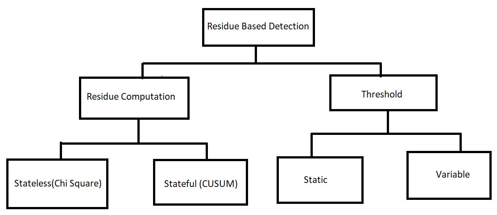

Most of the safety critical cyber physical systems (CPS) require to meet real time guarantees with stringent power and energy constraints. Securing those applications with standard cryptography algorithms (like RSA, AES etc.) incurs computational and timing overhead. Suitable light weight security primitives are considered to secure such systems. One such method is residue based detector. In residue based detection mechanism, residue is computed as difference between actual and estimated sensor output. This residue is then compared with a pre-defined threshold. If the residue exceeds the threshold an alarm is generated to indicate an attack. Broad classification of residue based detection mechanism is given in the below figure. Residue can be computed in two ways: a) in stateless method only current residue is considered to be compared with given threshold, and b) in stateful method past residues are also considered. The predefined threshold can be same for all instance (static) or it can vary (variable). However, it has been seen that if we have variable threshold, false alarm rate can be minimized. By false alarm we mean noise is considered as an attack. 